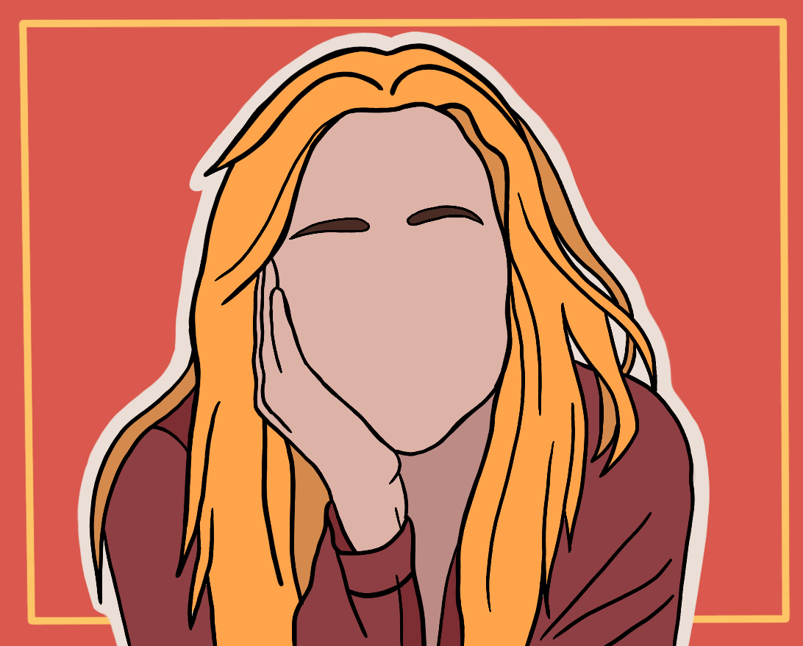

Om mig
Mit navn er Maja Kepler. Jeg er lige nu i gang med uddannelsen Multimediedesigner på KEA - Københavns Erhvervsakademi. Jeg er lige nu i gang med 3. semester, hvor jeg har valgfaget digital design og indhold. Her udvikler vi vores færdigheder indenfor webdesign, videoproduktion, sociale medier, grafisk design, en lille smule kode og meget mere.
Igennem studiet har jeg især udviklet en interessere for grafisk design, konceptudvikling og webdesign, i min fritid kan jeg også godt lide at koden små projekter, med den viden jeg har fået fra studiet.
I et projekt er jeg er især glad for opstarten med idegenerering og konceptudvikling, men også det små facer og hvordan man fører et projekt igennem fra start til slut.